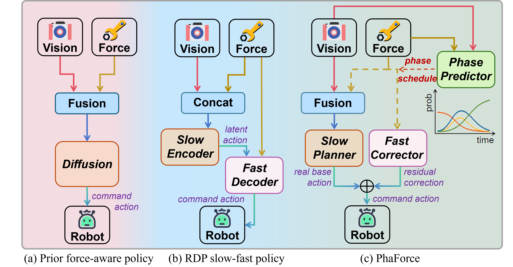
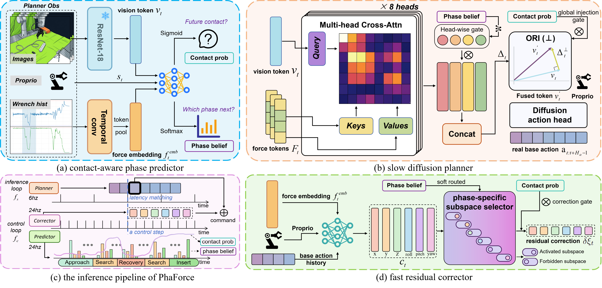
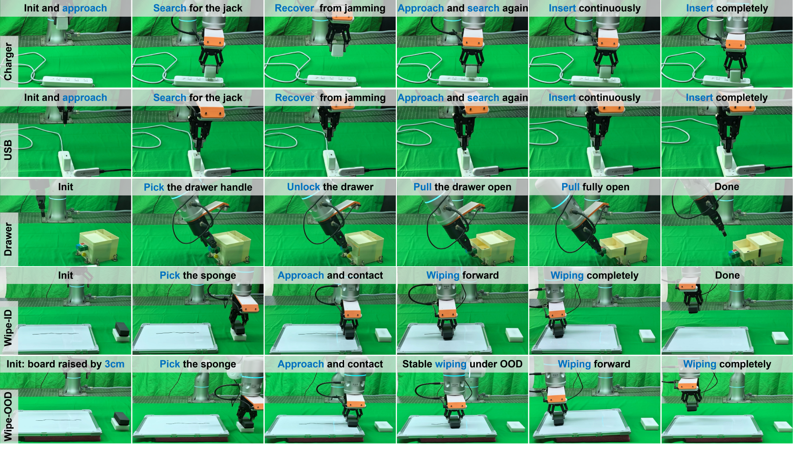
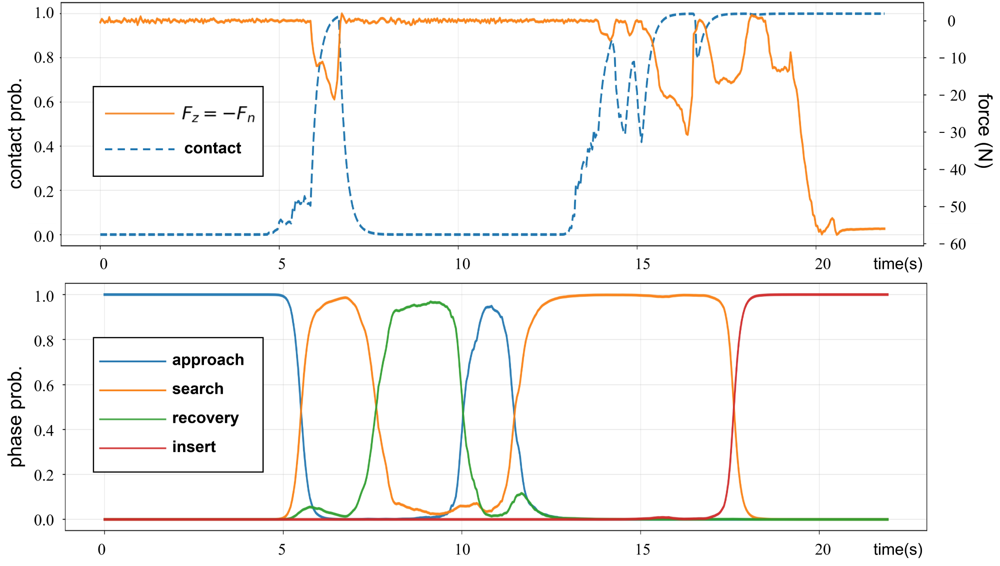
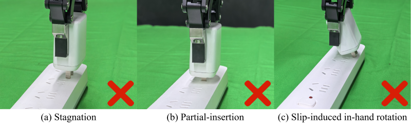

Contact-Aware Phase Predictor
CAP estimates contact probability and task phase belief, turning force history into an interpretable schedule signal for downstream planning and correction.
IROS 2026 / Contact-Rich Manipulation
1Tsinghua University
2Zerith Robotics
3Shenzhen Institutes of Advanced Technology
*Corresponding author: Houde Liu
Overview
Contact-rich manipulation requires vision-dominant task semantics and rapid reactions to force/torque transients. Generative visuomotor policies often update at low frequency because of inference latency and action chunking, so short-horizon contact events can be underused as closed-loop feedback.
PhaForce introduces an explicit contact/phase schedule that coordinates low-rate chunk-level planning with high-rate residual correction. The schedule decides when force should be trusted, how much it should influence planning, and where corrections should be applied during execution.

Method
CAP estimates contact probability and task phase belief, turning force history into an interpretable schedule signal for downstream planning and correction.
The planner performs dual-gated visual-force fusion with orthogonal residual injection, preserving vision semantics while conditioning action chunks on useful force cues.
The control-rate corrector routes residual actions through phase-dependent corrective subspaces for within-chunk micro-adjustments.

Experiments
| Method | Charger | USB | Drawer | Wipe-ID | Wipe-OOD | Avg |
|---|---|---|---|---|---|---|
| DP | 20 | 15 | 60 | 95 | 0 | 38 |
| DP (force-concat) | 20 | 20 | 50 | 85 | 0 | 35 |
| RDP | 50 | 55 | 65 | 85 | 75 | 66 |
| PhaForce (ours) | 80 | 85 | 85 | 95 | 85 | 86 |



Videos
Citation
@misc{wang2026phaforce,
title={PhaForce: Phase-Scheduled Visual-Force Policy Learning with Slow Planning and Fast Correction for Contact-Rich Manipulation},
author={Wang, Mingxin and Yue, Zhirun and Lu, Renhao and Li, Yizhe and Wang, Zihan and Pan, Guoping and Dong, Kangkang and Cheng, Jun and Cheng, Yi and Liu, Houde},
year={2026},
eprint={2603.08342},
archivePrefix={arXiv},
primaryClass={cs.RO},
doi={10.48550/arXiv.2603.08342}
}